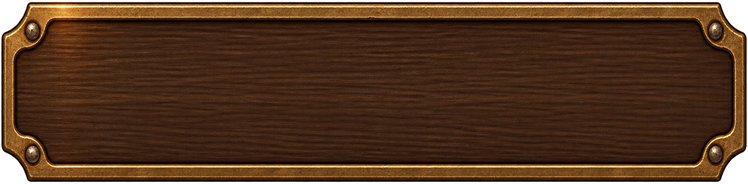
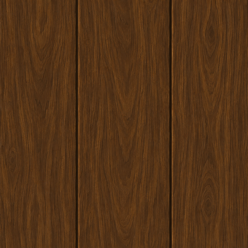
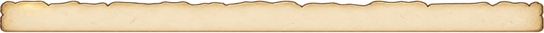
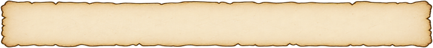
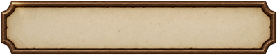
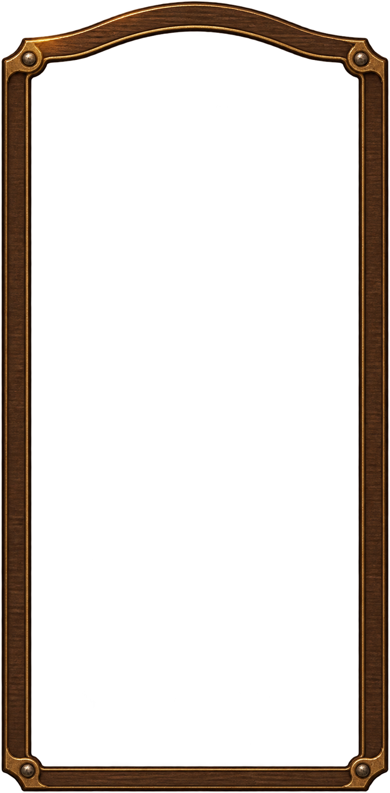
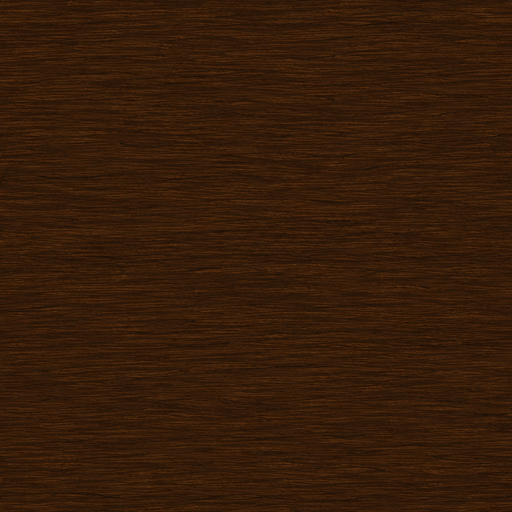
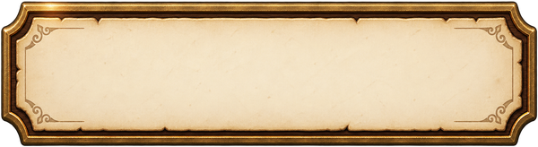
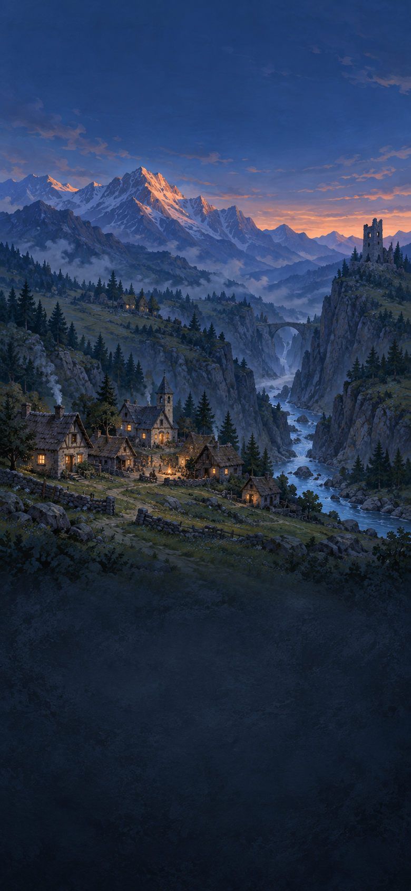
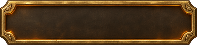

THE VALLEY · V9
Hoja de piezas · tamaño de uso CSS
Vista al 100 % de CSS. Las piezas mantienen el alfa; las losetas están en mosaico a su tamaño nominal y los marcos se comparan con el manifiesto.
Uso 374 × 92 CSS · PNG 748 × 184 · nueve partes: [24,24,24,24]

Uso 256 × 256 CSS · PNG 512 × 512

Uso 512 × 512 CSS · PNG 1024 × 1024
Uso 390 × 24 CSS · PNG 780 × 48 · nueve partes: [8,16,8,16]

Uso 358 × 34 CSS · PNG 716 × 68 · nueve partes: [10,14,10,14]
Uso 68 × 34 CSS · PNG 136 × 68 · nueve partes: [10,10,10,10]
Uso 46 × 46 CSS · PNG 92 × 92
Uso 46 × 46 CSS · PNG 92 × 92
Uso 358 × 40 CSS · PNG 716 × 80 · nueve partes: [10,16,10,16]

Uso 200 × 40 CSS · PNG 400 × 80 · nueve partes: [12,16,12,16]
Uso 200 × 40 CSS · PNG 400 × 80 · nueve partes: [12,16,12,16]

Uso 374 × 760 CSS · PNG 748 × 1520 · nueve partes: [100,24,24,24]

Uso 256 × 256 CSS · PNG 512 × 512

Uso 300 × 82 CSS · PNG 600 × 164 · nueve partes: [22,54,22,54]

Uso 512 × 512 CSS · PNG 1024 × 1024
Uso 390 × 844 CSS · PNG 780 × 1688

Uso 200 × 46 CSS · PNG 400 × 92 · nueve partes: [18,18,18,18]
